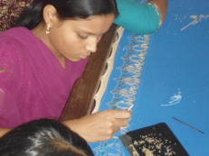

VAROSHA
Jorir Alo (Metal Threadwork on Fabrics)

The villages near Bamchandipur, Bardhaman are among the poorest areas in West Bengal. These areas used to be farm land but now owned by corporations. Without education and vocational skills. The local people were not able to get jobs and devastated by poverty. Since parents had to leave for the cities to find work, older siblings were forced to drop out of school and watch their younger siblings. Very few children regularly attended school.
Varosha launched one of its most challenging projects Jorir Alo (metal threadwork) to train girls and women in metal threadwork on fabrics. Varosha arranged all the financial and logistical support for this project from conception to completion.
The training will allowed every trained woman to earn a wage that can provide a decent living for her family. They were able to pass their trade along to their children, making the vocation sustainable for future generations. The project allowed the women to stay in their own village and their older children to attend school. Varosha provides nutritious meals to the women during their training.
Varosha has replicated the same model in Sonarpur-Rajpur and Nagra village in Bardhaman.
Varosha launched one of its most challenging projects Jorir Alo (metal threadwork) to train girls and women in metal threadwork on fabrics. Varosha arranged all the financial and logistical support for this project from conception to completion.
The training will allowed every trained woman to earn a wage that can provide a decent living for her family. They were able to pass their trade along to their children, making the vocation sustainable for future generations. The project allowed the women to stay in their own village and their older children to attend school. Varosha provides nutritious meals to the women during their training.
Varosha has replicated the same model in Sonarpur-Rajpur and Nagra village in Bardhaman.